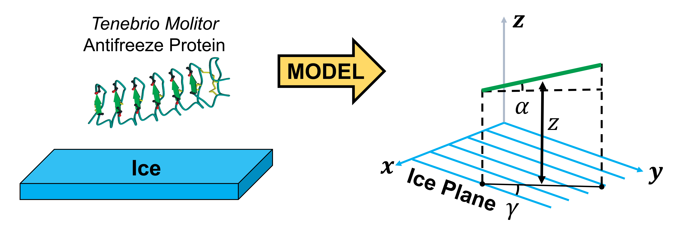

Kartik Kamat
AbbVie Inc., North Chicago.
Massachusetts Institute of Technology (2020-2022)
with Prof. Bin Zhang.
University of California Santa Barbara (2020)
with Prof. Baron Peters.
Computational and physics based molecular simulation approaches for problems in thermodynamics and kinetics.
(1) As a postdoc, I am using coarse-grained polymer model simulations for whole-genome modeling. We incorporate the effects of nuclear landmarks such as lamina, nucleolus and speckles to
investigate their role in the compartmentalizing the genome. The interactions in the whole nucleus model
are biologically motivated and parameterized using data-driven approaches. (Link below for a pre-print)
(2) My graduate research work is on a method development project for computing free-energy differences between different crystal structures.

(3) We are also formulating an analytically tractable kinetic model for understanding the attachment of antifreeze proteins to ice. We use custom code simulations to validate our theoretical predictions. (in collaboration with Prof. Valeria Molinero's group)
8. Kamat, K., Qi, Y., Wang, Y., Ma, J., and Zhang, B. “Genome Compartmentalization with Nuclear Landmarks: Random yet Precise.” in review, bioRxiv, 2021. (Link)
7. Kamat, K., Naullage, P., Molinero, V., and Peters, B. “ Oriented Attachment Kinetics for Rod-like Particles at a Flat Surface: Buffon’s Needle at the Nanoscale”. J. Chem. Phys., 157, 214113, 2022. (Link)
6. Jiang, Z., Qi, Y., Kamat, K.,and Zhang, B. “Phase Separation and Correlated Motions in Motorized Genome.” J. Phys. Chem. B., 126, 30, 5619-5628, 2022. (Link)
5. Kamat, K., Naullage, P., Molinero, V., and Peters, B. “Diffusion Attachment Model for Long Helical Antifreeze Proteins to Ice.” Biomacromolecules, 23, 2, 513-519, 2022. ♦ (Link)
4. Kamat, K., Guo, R., Reutzel-Edens, S.M., Price, S.L., and Peters, B. “Diabat method for polymorph free energies: Extension to molecular crystals.” J. Chem. Phys., 153(24), 244105, 2020. (Link)
3. Yappert, R., Kamat, K., and Peters, B. “The overdamped transmission coefficient: Recovering the true mean first passage time from an inaccurate reaction coordinate.” J. Chem. Phys., 151(18), 184108, 2019. (Link)
2. Kamat, K., and Peters, B. “Gibbs free-energy differences between polymorphs via a diabat approach.” J. Chem. Phys., 149(21), 214106, 2018. (Link)
1. Kamat, K., and Peters, B. “Diabat Interpolation for Polymorph Free-Energy Differences.” J. Phys. Chem. Lett., 8(3), 655-660, 2017. (Link)
♦ - Special Issue publication and highlighted on the cover.

A small compilation of some simple statistical mechanical concepts/mathematical manipulations that I have come across in published papers, books etc. I found many of these ideas/examples useful. This is a growing list and I will add to it whenever I find time.
1. Calculation of kinetic partition function with constraint
2. Harmonic restraints and the motion of center of mass in solids
3. Kramers result in one dimension for the high friction limit
4. Hankel transforms for pde's in cylindrical coordinates
5. Green's function solution to the inhomogeneous reaction-diffusion equation
software report - Discussion on Langevin thermostatting in LAMMPS using restart files
1. International Summer School & Genome Architecture and Function Workshop, MIT, Cambridge, USA, 2022. (Participant)
2. AIChE, Boston, Session on Recent Advances in Molecular Simulation Methods, 2021. (Talk)
3. Centre Européen de Calcul Atomique et Moléculaire (CECAM) Mixed-Gen, Session 1-Activated Events, 2021. (Virtual Poster)
4. Workshop on Rare Events Applications, Computations and Theory, IISc-Bangalore, India, 2019. (Participant)
5. ChBE Graduate Research Symposium, Univ. of Illinois at Urbana-Champaign 2019. (Talk)
6. Midwest Thermodynamics and Statistical Mechanics Conference, Urbana-Champaign, 2019. (Talk)
7. Amgen-Clorox Graduate Student Symposium, UC Santa Barbara, 2018. (Talk)
8. AIChE, Pittsburgh, Session on Recent Advances in Molecular Simulation Methods I, 2018. (Talk)
9. Southern California Theoretical Chemistry Symposium, Caltech Pasadena, 2018. (Poster)
10. Berkeley Mini Stat Mech Meeting, UC Berkeley, 2017. (Poster)
Member of the American Institute of Chemical Engineers. (AIChE)
Member of the American Chemical Society. (ACS)
kartikk(at)mit(dot)edu